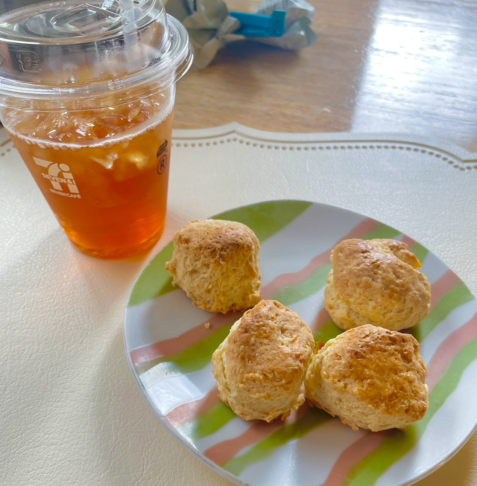

初個人サイト(仮)
2026/05/22更新
なんだかんだで個人サイトを作ってみようと思い...
HTMLもCSSも学生以来ほとんど書いてなかったけどとりあえず適当に作成.久しぶりに書いた.
でもなんというかレイアウトとデザインにめっちゃ時間使ったんだよね...
で考えた挙句,結局自分でもあんまり満足していない構成になった()
またいつか修正するかもしれない.
でもHTMLはネットの資料豊富過ぎる.それはありがたい.書くのは慣れちゃえば結構簡単.
今回はそれだけ.ここでは日記というかブログというかなんか出来事系を載せていこうと思う.
趣味系とか備忘録とかはMiscにまとめていくよ.
やっぱり何もないのもあれなんで最近と言うか年始というか家の近くのセブンに導入された紅茶マシンの紅茶を...
セブンの紅茶,思った以上にクオリティ高くてびっくり.ちなみにスコーンは自作.
紅茶にはスコーンが一番合うと思う.甘すぎなくバターの香りが紅茶と合うと思う.

それではまた...
ちなみに(仮)と書いたのはサーバ移動するかもしれないから.(GitHub Pagesは色々と制約が...)
良いのないかな.いつか探す誰かオヌヌメ教えてクレメンス()